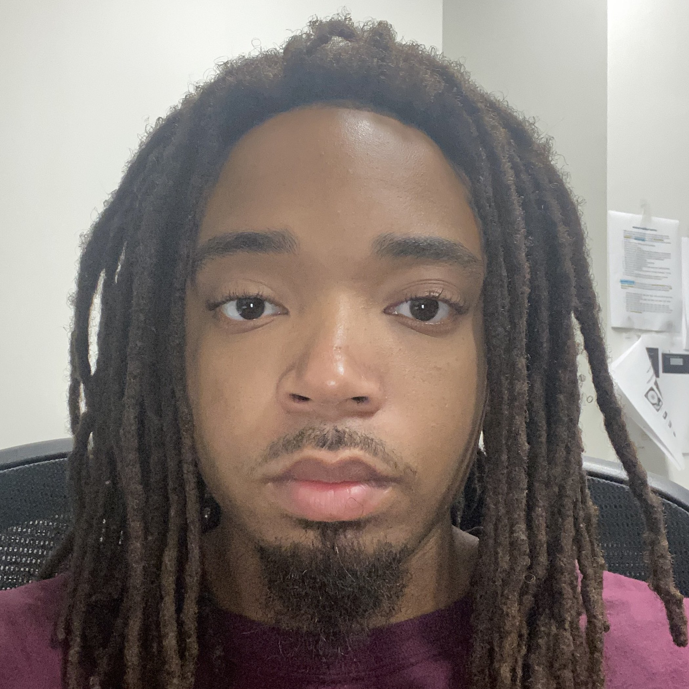
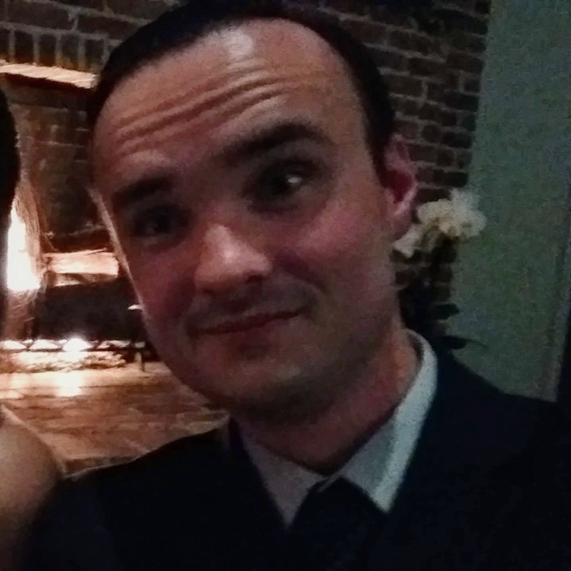
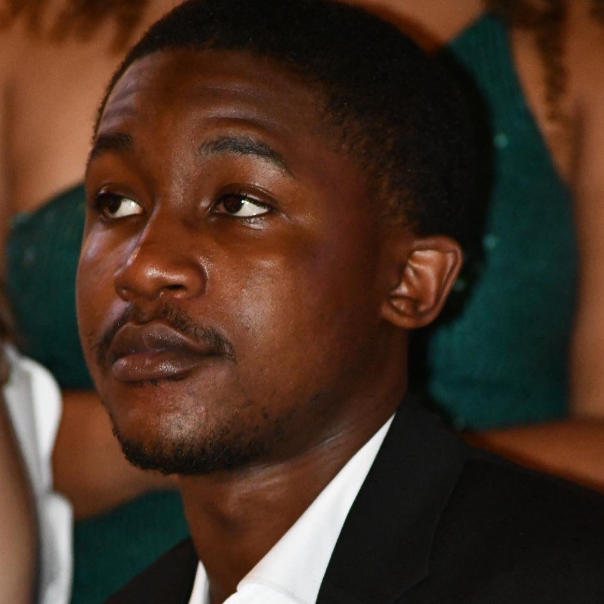

Cody
Algorithm Designer
Database Manager
Cody Cochran is a senior undergraduate at Old Dominion University who is persuing a bachelor's in Computer Science. He has worked for 12 years as a technician and field engineer of radio equipment. His hobbies include programming, circuit building, and analyzing problems in mathematics that catch his interest.

Primary Role
Devin Morgan is a Junior at ODU going for a double major bachelors degree in computer science and physics. He enjoys coding video games in his spare time and actually has a couple simple released video games on the google play store. Other interests include running, playing video games, sushi, and music.
Devin
Primary Role
Secondary Role
Devin Morgan is a Junior at ODU going for a double major bachelors degree in computer science and physics. He enjoys coding video games in his spare time and actually has a couple simple released video games on the google play store. Other interests include running, playing video games, sushi, and music.

Primary Role
John is a senior undergraduate at Old Dominion University pursuing a B.S. in Computer Science. John is a 10 year Navy veteran and currently works as a Cyber Security Analyst with Leidos. His hobbies include running, Muay Thai, programming, and spending time with his wife and 3 children.
John
Primary Role
Secondary Role
John is a senior undergraduate at Old Dominion University pursuing a B.S. in Computer Science. John is a 10 year Navy veteran and currently works as a Cyber Security Analyst with Leidos. His hobbies include running, Muay Thai, programming, and spending time with his wife and 3 children.

Document Speacialist
Kyrie Champagne is a senior undergraduate at Old Dominion University and is pursuing a bachelor's in Computer Science. He currently works as an IT specialist for Americorps OIG. His hobbies are woodwork, martial arts, and politics.
Kyrie
Document Speacialist
Backend Developer
Kyrie Champagne is a senior undergraduate at Old Dominion University and is pursuing a bachelor's in Computer Science. He currently works as an IT specialist for Americorps OIG. His hobbies are woodwork, martial arts, and politics.

Marcelo
Webmaster
Algorithm Designer
Marcelo Vargas is a senior undergraduate at Old Dominion University pursuing a B.S. in Computer Science. Marcelo has been working for Wells Fargo for 4 years and in banking for 5 years overall. Marcelo's hobbies include playing soccer, watching soccer, playing video games, listening to music and spending time with his family.